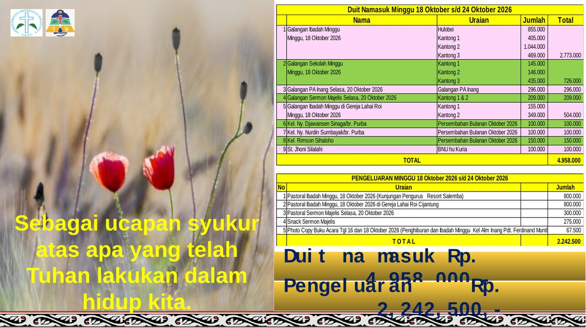
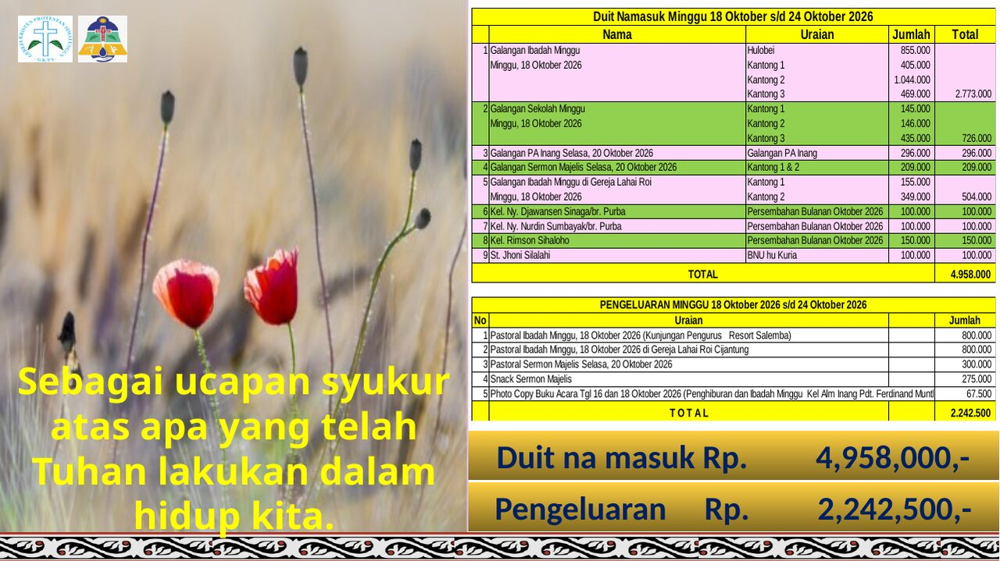
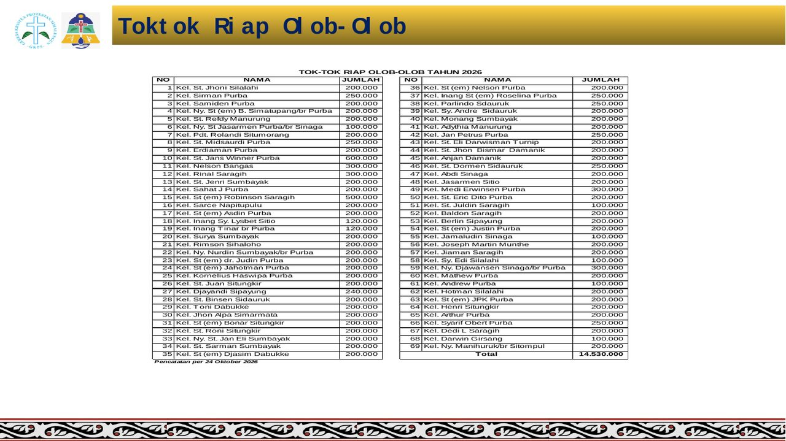
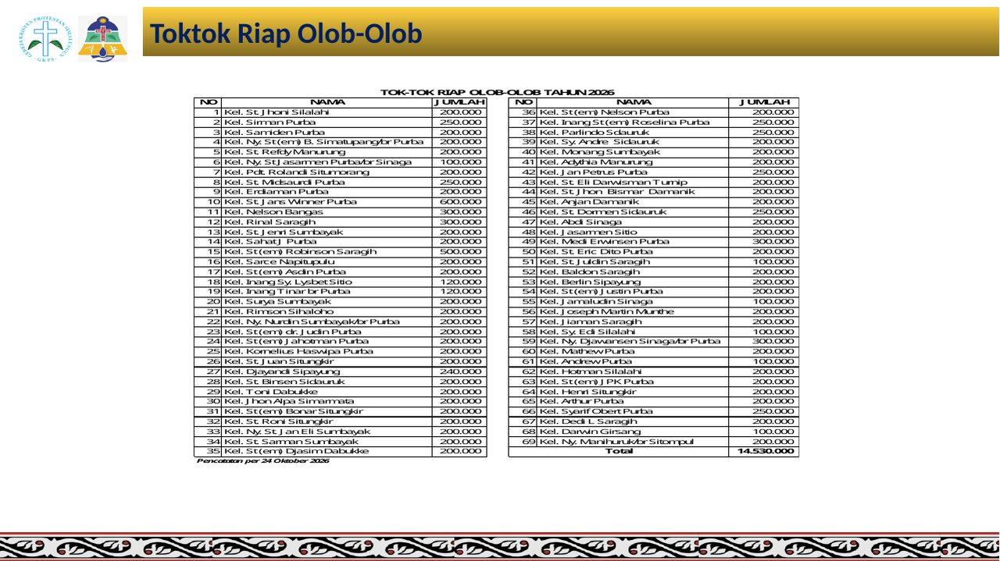

Spec 166 — a converted deck keeps the deck's own layout
Static preview. Left: the PDF the app serves today for
Slide Warta Jemaat GKPS Klender Tgl 25 Oktober 2026.pptx (converted by the media image on
2026-10-25). Right: the same page converted by the proposed converter — LibreOffice 25.2 with the
deck's own faces mapped to metric-compatible ones. Both rendered at 96 dpi by pdftoppm.
Page 1 — the cover
Today: the mono fallback
wraps the title into a narrow column; its ink box measures 300 × 275 px at (177, 53)
where the deck draws 477 × 199 px at (95, 91).Proposed: ink box
477 × 199 px at (95, 90) — one pixel above the reference.
Page 2 — the offering tables

Today: cell text wraps,
rows grow, and the band's two amounts fall onto lines of their own — 12 words in the
band where the deck has 5.

Proposed: the amounts sit
at x 475.45 and x 785.56 — the same coordinates the reference render
puts them at.
Page 3 — the service schedule
Today: the table's own
words land up to 250.7 pt from their place (≈ 26 % of the page width).Proposed: every word
within 0.7 pt of the reference.
Page 10 — the monthly giving table

Today: 60 rows spaced by
the mono face's taller lines; the column drifts by 240.1 pt.

Proposed: the rows sit
on the reference's rhythm; the remaining difference is the missing Office faces, not layout.
Measured
Face the deck names
Runs
Resolves to, today
Resolves to, proposed
Calibri
630
Liberation Mono
Carlito
Calibri Light
theme
Liberation Mono
Carlito
Times New Roman
324
Liberation Serif
Liberation Serif
Britannic Bold
52
Liberation Mono
Noto Sans Bold
Berlin Sans FB Demi
6
Liberation Mono
Noto Sans Bold
Britannic Bold and Berlin Sans FB Demi ship with
Office and are absent from every machine here, so the proposed column substitutes them; supplying them
(as the operator can) is what closes the rest.